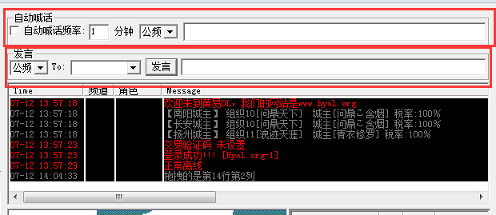

登录

打开角色窗口

修理装备

战斗设置

自动武功加持

外功是智能的，只能选择最强，或最省内力。
补血、补内武功也在这里勾选，
支持组队武功，
不支持夫妻技能，因为经常伴侣不在线，容易卡住。
常规设置

特别注意：
寻怪(相对)级别：比角色等级 -10~ 9
当前角色是26级，
-10 实际就是 角色等级26 - 相对低10级 = 16级怪
9 实际就是 角色等级26 + 相对高 9级 = 35级怪
挂机点设置

这里的挂机点等级是指怪物的等级，和第6页【寻怪等级】概念是一致的。
如果设置不正确，那么挂机点将无法保存。
如果不明白继续看下一页
挂机点设置详解

②当前挂机范围内的怪物等级是16级，对应的挂机点设置中的怪物等级也要填写16
③寻怪设置：想打16级~35级的怪物
换句话说，就是想打比自己低10级的怪~比自己高9级的怪。
这个等级设置是相对的，和其他的外挂概念不同，优点是:
事先设置好各种等级的挂机点后， 可以随着角色的升级后自动更换挂机点

只买一种红药时，只能设置为大血药。
设置顺序时，先设置大血药，再设置小血药。
当不买小药时，必须取消【买小药】，且大药的剂量必须大于小药的剂量，否则会有出错提示。
宠物买药不用设置，只要有能用的宠物就会自动使用，默认寻找第一个能用的宠物。
一定注意+9宠物和+10宠物的区别，否则可能设置的大药买不了，建议全部用+10的宠物。
这里要注意：
使用任务版时，不要勾选超出2倍药卖掉
 ，否则会卡住任务，浪费钱财。
，否则会卡住任务，浪费钱财。

【添加】的武功默认学的等级，是下一级武功所要求的前置等级，如果没有后置武功，则默认100级。 添加好的武功，鼠标双击可设置学习到多少级，默认100，确定就行了。

远程设置：



自动隐藏的目的是尽量扩大信息显示的空间。